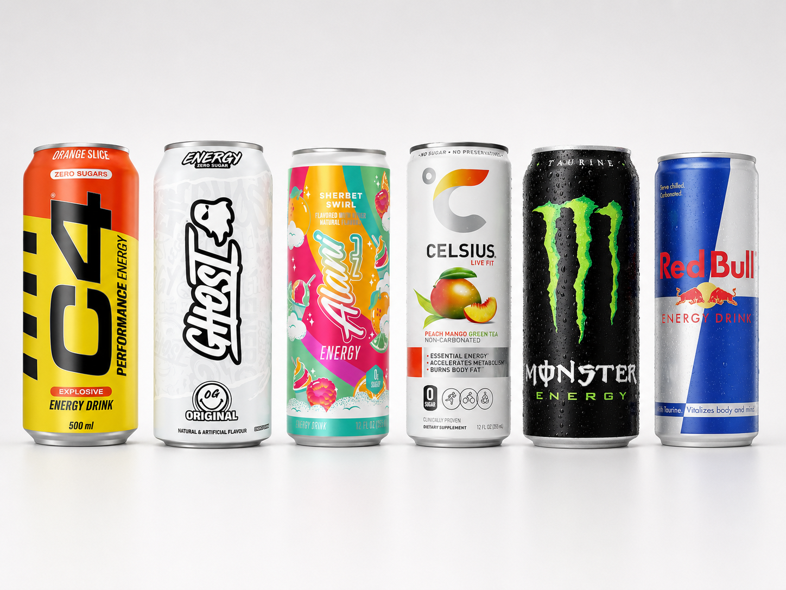
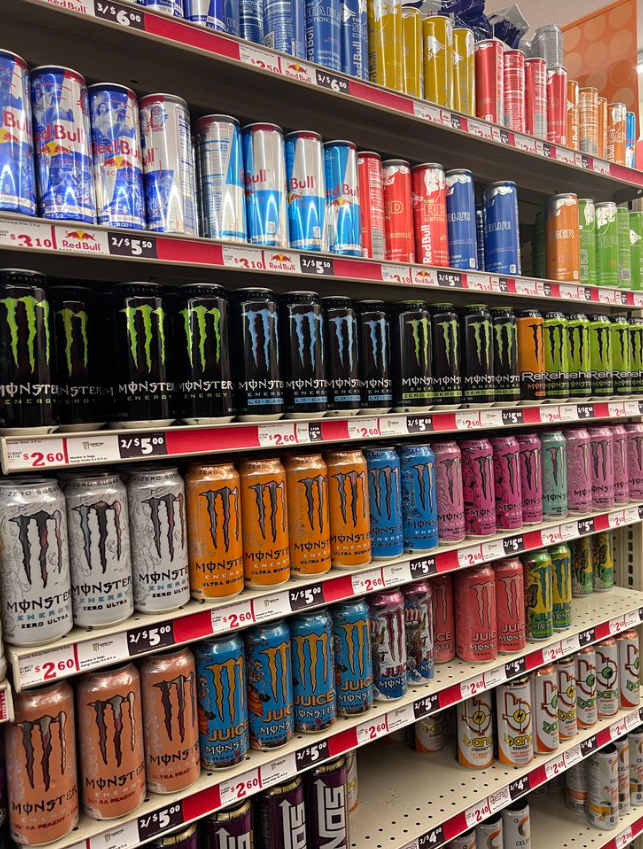
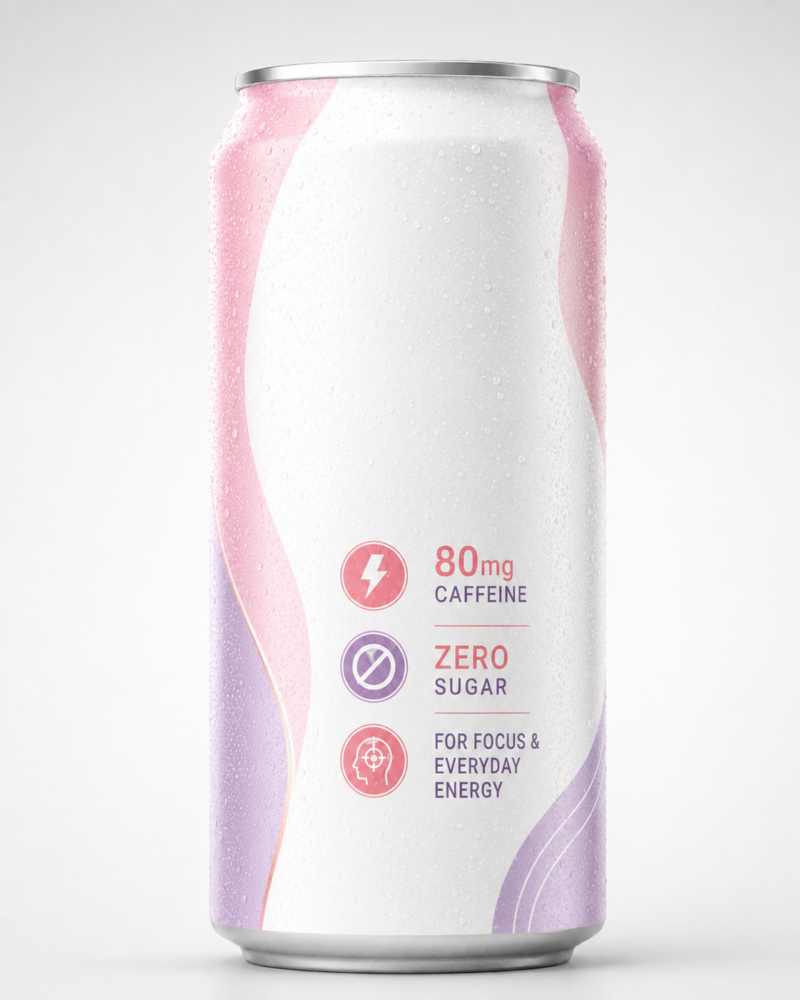
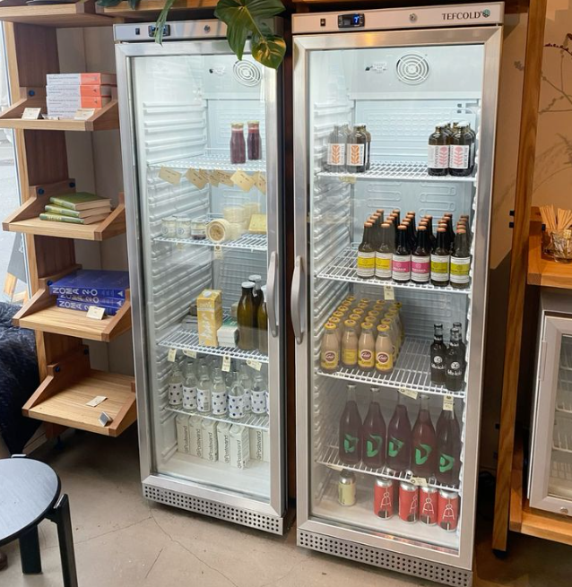

La demanda existe
El uso rutinario se amplía
La energía entra en trabajo, estudio, gimnasio, trayectos, viajes y turnos largos.
Hipótesis estratégica de categoría
Solicitar llamada de 20 minBebidas energéticas / hipótesis estratégica de oportunidad
¿Dónde puede ganar una nueva marca o distribuidor cuando la categoría crece, se satura y recibe más presión regulatoria? La apertura no es una fórmula más fuerte. Es un uso más claro.
Pensado para marcas, distribuidores y equipos comerciales que necesitan saber dónde una propuesta energética todavía puede generar recompra.
La demanda existe
La energía entra en trabajo, estudio, gimnasio, trayectos, viajes y turnos largos.
La competencia es intensa
Red Bull, Monster, Celsius, Alani Nu, Ghost y C4 ya son atajos para el comprador.
La brecha es práctica
Dosis visible, cero azúcar y un pack más tranquilo ayudan a volver a comprar.
Problema comercial
La apertura es una energía diaria más ligera: dosis visible de cafeína, cero azúcar, pack más calmado y una razón para tomarla en trabajo, estudio, viaje o turnos largos.
Situación
Las bebidas energéticas ya no son solo deporte, noche, gaming o momentos extremos. Los consumidores las usan en rutinas diarias, pero el lineal ya tiene marcas por defecto para casi todos esos usos.
La demanda sigue fuerte.
La categoría está saturada.
Prueba no significa recompra.
Nuevos segmentos aún pueden escalar.
Los códigos juveniles de alta cafeína enfrentan presión.
Análisis
El próximo consumidor no rechaza la energía. Evita la carga de la categoría clásica: demasiada cafeína, demasiado azúcar, sabor artificial, bajón, códigos visuales agresivos y costes de salud poco claros.
Alta cafeína, identidad ruidosa, deporte y noche.
Dosis correcta, menos azúcar, trabajo, estudio, hidratación y rutina.
Rendimiento premium, intensidad, fitness, estilo de vida, sabor o preentreno.
Hacer que el uso sea fácil de repetir.
Empuje ligero, rutina portátil.
Foco para pantallas largas.
La cuña más clara para empezar.
Hidratación con energía ligera.
Energía estable para turnos largos.
Reto
Muchas marcas nuevas fallan después de la primera compra. La pregunta difícil no es “¿alguien lo probará?” Es “¿esa misma persona volverá a comprar la semana que viene?”
Mucho ruido, claims parecidos y ningún motivo obvio para repetir la misma lata.
Dosis visible, uso claro y un papel más tranquilo durante la semana.


Foco | hidratación | trabajo | estudio | rutinas
Oportunidad
El consumidor más atractivo sigue queriendo energía. Lo que no quiere es que la categoría se sienta tan intensa, artificial o juvenil.

Dirección estratégica
La cuña está entre café, agua con electrolitos y energéticas clásicas: más ligera que Monster, más funcional que un refresco, más fría que café y menos de gimnasio que un preentreno.
Ejecución comercial
Probar primero el momento de concentración de la tarde. Después expandir solo cuando recompra, velocidad y precio aguanten sin demasiado apoyo promocional.
Idea de activación
Un momento claro a ganar: el bajón de la tarde, cuando trabajo, estudio y pantallas largas necesitan un empuje predecible.

Personas que necesitan energía diaria para trabajo, estudio, trayectos, viaje, gimnasio o días largos.
Pruebas de producto entre 14:00 y 16:00 en oficinas, universidades, coworking y vending laboral.
Bebida de foco 80 mg, hidratación con 80 mg de cafeína y extensión sin cafeína o muy baja.
Impacto de negocio
El objetivo es entrada de nuevos consumidores, más recompra desde una ocasión diaria, menor exposición que marcas juveniles de alta cafeína y una historia más limpia para distribuidores.
¿Necesitas encontrar la cuña real?
Marksyte puede mapear el lineal, validar la ocasión, probar la propuesta y construir el scorecard antes de invertir en escala.
Paradoja de mercado
Las bebidas energéticas siguen expandiéndose porque los consumidores buscan energía, concentración y conveniencia. Pero el lineal está saturado, los grandes actores concentran la atención y cada lanzamiento debe demostrar que la prueba se convierte en recompra.
La paradoja
Las bebidas energéticas se sitúan entre energía, concentración, fitness, conveniencia, sabor e identidad. La categoría ya forma parte de rutinas cotidianas.
Trabajo, estudio, gimnasio, gaming y jornadas largas crean ocasiones habituales.
Los consumidores atentos a la salud están más abiertos a la categoría.
Las bebidas prometen concentración, hidratación, rendimiento o bienestar.
Los nuevos sabores generan prueba y atención en redes sociales.
Lanzar es fácil. Conseguir recompra es difícil. La prueba puede llegar por sampling, influencers, promociones o packaging. La segunda compra exige una ocasión clara.
El consumidor prueba una vez, pero no sabe cuándo volver a tomarla.
"Sin azúcar, energía limpia, gran sabor" suena como el resto.
Listing, promociones, transporte, márgenes y devoluciones consumen caja.
La marca consigue entrar, pero no recibe impulso.
Se confunde el ruido inicial con demanda repetible.
La oportunidad no está en sumarse a la categoría. Está en localizar un espacio claro donde las marcas existentes tengan un encaje más débil.
Estimación del mercado de bebidas energéticas en EE. UU. en 2024, con crecimiento previsto a cinco años.
Fuente: Mintel, 2025Nuevas bebidas energéticas lanzadas en 2024, según NielsenIQ.
Fuente: NielsenIQ vía NACS, 2026Cuota del valor de bebidas envasadas que representan las energéticas en tiendas de conveniencia de EE. UU. en 2024.
Fuente: NACS vía CSP, 2025Evolución de la categoría
La categoría pasó del alivio de la fatiga al estilo de vida, luego a la intensidad, al fitness y a la comunidad. La próxima ola probablemente será controlada, cotidiana y más consciente de la regulación.
Olas de la categoría
Códigos anteriores
RuidosoAlta cafeínaLatas grandes Deportes extremosCódigo masculinoMucho azúcarCódigos emergentes
ControladoDiarioConcentración HidrataciónPoco azúcarTrabajo y estudio Más inclusivoAtento a regulación1980s-1990s
2000s
2010s
2020s
2020s
Siguiente
Cada ola ganadora hizo útil la energía en un nuevo contexto. La próxima no tratará de añadir más cafeína, sino de encajar mejor.
Qué enseñó cada ola al mercado
El significado de marca puede pesar más que el líquido.
Formato, precio por volumen e identidad pueden desafiar a un líder premium.
Una imagen más saludable puede atraer nuevos consumidores a la energía.
Las mujeres no estaban ausentes: estaban poco atendidas.
Sabor, gaming, creadores y comunidad pueden acelerar notoriedad.
La nutrición deportiva puede pasar a bebidas de consumo masivo.
Las grandes marcas no siempre vencen en precio, hábito y distribución.
Cambio del consumidor
La energía ya no es solo para deporte, gaming, fiestas o momentos extremos. Se usa en trabajo, estudio, gimnasio, trayectos, largas sesiones de pantalla y rutinas diarias. La pregunta comercial es qué ocasiones pueden sostener la recompra cuando el consumidor también valora azúcar, dosis de cafeína, bajón, sueño y sabor.
Transformación
Los consumidores siguen queriendo el resultado. Una nueva oferta debe demostrar que reduce los costes que importan en la ocasión elegida.
Nuevas tensiones del consumidor
El mercado no solo se expande. Se vuelve más selectivo.
Nuevas ocasiones de uso
La energía ya no es una sola ocasión. Es una secuencia de momentos.
Menos cafeína, claim claro de concentración, menos bajón.
Marca serena, sabor adulto, dosis menor.
Cero azúcar, electrolitos, códigos de rendimiento.
Resistencia fiable y canales laborales.
Hidratación con energía ligera y ritual de noche.
La próxima marca no debería preguntar: "¿Cómo hacemos una bebida más fuerte?"
Debería preguntar: "¿Qué momento resolvemos mejor?"Presión regulatoria
Las bebidas energéticas entran en una fase más regulada. Aumenta la presión sobre niveles de cafeína, venta a menores, azúcar, advertencias, marketing juvenil, vending, delivery y envases. La exposición varía según mercado, formulación, claims, canal y público.
Presión creciente
Los productos altos en cafeína son más difíciles de defender, especialmente ante públicos jóvenes.
Restricciones para menores de 16 o 18 pueden limitar acceso y exigir verificación.
Las bebidas azucaradas afrontan más presión en publicidad y retail.
La información clara de cafeína pasa a formar parte de la confianza.
Gaming, campañas sociales, centros educativos e influencers reciben más escrutinio.
Preocupa la combinación de bebidas energéticas y alcohol entre jóvenes adultos.
El control de edad es más difícil fuera del retail tradicional.
Los sistemas de depósito y requisitos de envase pueden aumentar costes.
Respuesta de categoría
Presión regulatoria
Dosis fuerte, advertencia clara, posicionamiento adulto.
Menos azúcar, pero todavía centrada en cafeína.
50 a 100 mg de cafeína para uso rutinario.
Electrolitos y cafeína moderada.
Hidratación, vitaminas y sabor sin cafeína añadida.
Nueva oportunidad
La mejor oportunidad no consiste en evitar la regulación. Consiste en probar formulaciones y posicionamiento frente a la dirección regulatoria del mercado objetivo.
En la UE, las bebidas por encima de este nivel deben advertir de su alto contenido en cafeína e indicar la cantidad.
Fuente: Reglamento UE 1169/2011, Anexo IIIInglaterra consultó en 2025 la prohibición de vender bebidas energéticas altas en cafeína a menores, incluidas máquinas expendedoras.
Fuente: consulta DHSC Reino Unido, 3 sep 2025Canadá limita a este máximo la cafeína por porción en bebidas energéticas y exige etiquetado preventivo.
Fuente: Health Canada, actualizado 2 may 2024Qué cambia
Las marcas más expuestas se basan en alta cafeína, atractivo juvenil, latas grandes, branding agresivo y claims funcionales poco claros.
Las marcas con más margen se basan en cafeína controlada, etiquetado claro, ocasiones adultas, hidratación y rutinas diarias.
La regulación debilita "más cafeína" como estrategia de crecimiento. El control gana valor.
Panorama competitivo
Red Bull, Monster, Celsius, Alani Nu, Ghost, C4 y otros retadores fuertes ya compiten intensamente en los principales territorios. La oportunidad no está en copiarlos, sino en encontrar una ocasión donde su lógica de marca tenga un encaje más débil.
Asociaciones establecidas
Rendimiento, estilo de vida, deporte, cultura mediática
Lata grande, cultura joven, sabores intensos, visibilidad
Gimnasio, rendimiento, cero azúcar, rutinas activas
Sabor, bienestar, redes sociales, estilo de vida
Lanzamientos de sabor, creadores, identidad gaming
Menos azúcar, aceptación más amplia
Precio, accesibilidad, sabor familiar, uso cotidiano
Precio, disponibilidad, energía suficiente
Restricciones del incumbente
Las grandes marcas pueden entrar en muchos espacios, pero no serán igual de creíbles en todos.
Una propuesta serena para oficina puede chocar con los códigos intensos de Monster.
Una dosis baja puede parecer débil frente a marcas de alto rendimiento.
Las grandes marcas se construyen en conveniencia, supermercados, gimnasios y gran retail.
Escalar energía limpia y asequible de forma rentable es difícil.
Las marcas evitan productos que parezcan demasiado dirigidos a menores.
Un nuevo producto puede canibalizar un SKU existente.
Las comunidades rechazan marcas que llegan tarde o de forma forzada.
Mapa de oportunidad
Territorio a validar
Energía diaria controlada Concentración | Hidratación | Trabajo | Estudio | Turnos | Menos cafeínaEvitar la guerra directa
Energía premium / Intensidad en lata grande / Fitness / Sabores gaming / Estilo de vida y bienestar
Concentración baja en cafeína / Productividad adulta / Hidratación + energía ligera / Turnos / Sin gas / Sabor familiar
Las oportunidades más fuertes se sitúan entre identidades de marca existentes, no dentro de ellas.
Una nueva marca no debería preguntar: "¿Podemos ser mejores que Monster o Celsius?"
Ahí empieza la cuña de entrada.
Hipótesis prioritarias
No son públicos confirmados. Son hipótesis basadas en ocasiones que conviene probar porque combinan una necesidad frecuente con posibles fricciones de branding, dosis de cafeína, sabor, azúcar, bajón o encaje de canal.
Cuñas candidatas
Necesita Energía sin ansiedad, nerviosismo ni perjudicar el sueño.
Frustración La mayoría de marcas aún vende intensidad.
Concepto a probar: energía diaria con menos cafeínaNecesita Concentración para pantallas largas y bajones de tarde.
Frustración Las marcas hablan a gimnasio, gaming o noche.
Concepto a probar: bebida de concentración con 80-100 mgNecesita Energía para trabajo y vida sin teatralidad de rendimiento.
Frustración Demasiado juvenil, estético o centrado en gimnasio.
Concepto a probar: energía serena para productividadNecesita Energía controlada y repetible en días intensos.
Frustración La categoría parece ruidosa y artificial.
Concepto a probar: energía para rutina adultaNecesita Energía fiable adaptada a un ritmo de trabajo real.
Frustración Su necesidad no es glamourosa para las historias de marca.
Concepto a probar: energía funcional para vendingNecesita Hidratación con un impulso ligero.
Frustración Hidratación y energía se tratan por separado.
Concepto a probar: electrolitos + cafeína ligeraNecesita Sabor y ritual sin alcohol ni un golpe intenso.
Frustración La energía clásica es excesiva para la noche.
Concepto a probar: formato social con menos cafeínaNecesita Sabor familiar, precio normal y opción sin gas.
Frustración La energía limpia puede parecer premium y centrada en lata.
Concepto a probar: energía sin gas asequibleLa tensión no resuelta más fuerte
El producto no tiene que sentirse más débil. Tiene que sentirse más controlado.
Mapa de hipótesis
Alta necesidad diaria. Encaje débil con identidades actuales de energía.
Alta necesidad, pero la función y el canal pesan más que la imagen.
Ocasiones ligeras con potencial para nuevos formatos.
Demanda relevante, con mayor presencia de incumbentes.
Una primera prueba razonable se sitúa en la rutina diaria de menor intensidad: concentración, trabajo, estudio, hidratación y energía controlada. La recompra debe decidir si existe una cuña real.
Implicación comercial
La oportunidad solo se gana si una propuesta más controlada genera recompra.
Playbook comercial
La mejor forma de encontrar una oportunidad no es un lanzamiento nacional. Es una prueba focalizada que demuestra si un consumidor concreto, en un momento concreto, vuelve a comprar sin fuertes descuentos.
La prueba que importa
Sampling, influencers, promociones y una lata atractiva pueden generar la primera compra. La prueba real es la recompra.
La pregunta real es: ¿Volverá a comprarla el consumidor la semana que viene?
De hipótesis a escala
El objetivo no es demostrar que la gente lo probará. Es demostrar que un grupo de consumidores volverá a comprarlo.
Cómo probar sin sobreinvertir
Ver dónde ya abundan o faltan claims, precios, formatos y consumidores.
Encontrar la fricción: demasiado dulce, caro, cafeína excesiva, sabor artificial o bajón.
Saber qué posicionamiento atrae antes de producir inventario.
Probar si el consumidor objetivo entiende rápido el producto.
Medir rotación real en 10 a 30 tiendas durante 8 a 12 semanas.
Saber si el producto crea hábito, no solo curiosidad.
Evitar falsa escala y caja desperdiciada siguiendo demanda probada.
Qué medir
Las personas compran de nuevo sin ser empujadas.
El producto se mueve en frío, no solo durante sampling.
Los consumidores devuelven el mismo caso de uso.
Las ventas no se hunden al acabar la promoción.
Las tiendas piden más stock o más facings.
La marca crea consumidor u ocasión, no solo cambia una lata.
Uno o dos SKUs líderes indican dónde centrarse.
Qué no hacer
Dispersa caja, atención y espacio en lineal.
"Energía para todos" no es una cuña.
La atención de influencers no siempre se convierte en recompra.
Oculta si el consumidor pagará el precio real.
El ruido inicial puede desaparecer al parar el sampling.
Celsius, Ghost y Alani Nu ya defienden esos espacios.
Una bebida laboral puede fallar en conveniencia y ganar en vending.
La puerta a la escala
Una marca está lista para escalar solo cuando tres cosas son ciertas:
El consumidor sabe cuándo tomarla.
El consumidor vuelve a comprarla sin gran promoción.
La economía del canal funciona tras márgenes de distribuidor y retailer.
Si falta una de estas condiciones, la marca no está lista para escalar.
Cómo ayudaría Marksyte
Esta es una hipótesis de categoría, no una recomendación de lanzamiento. El siguiente paso es establecer qué ocasión, propuesta y canal producen una economía repetible.
Claims, niveles de cafeína, formatos, precios, canales y posiciones incumbentes.
Entrevistas por ocasión y análisis de quejas para identificar tensiones creíbles.
Propuestas focalizadas probadas antes de inventario o distribución amplia.
Recompra, rotación, resiliencia de precio y margen para decidir escala.